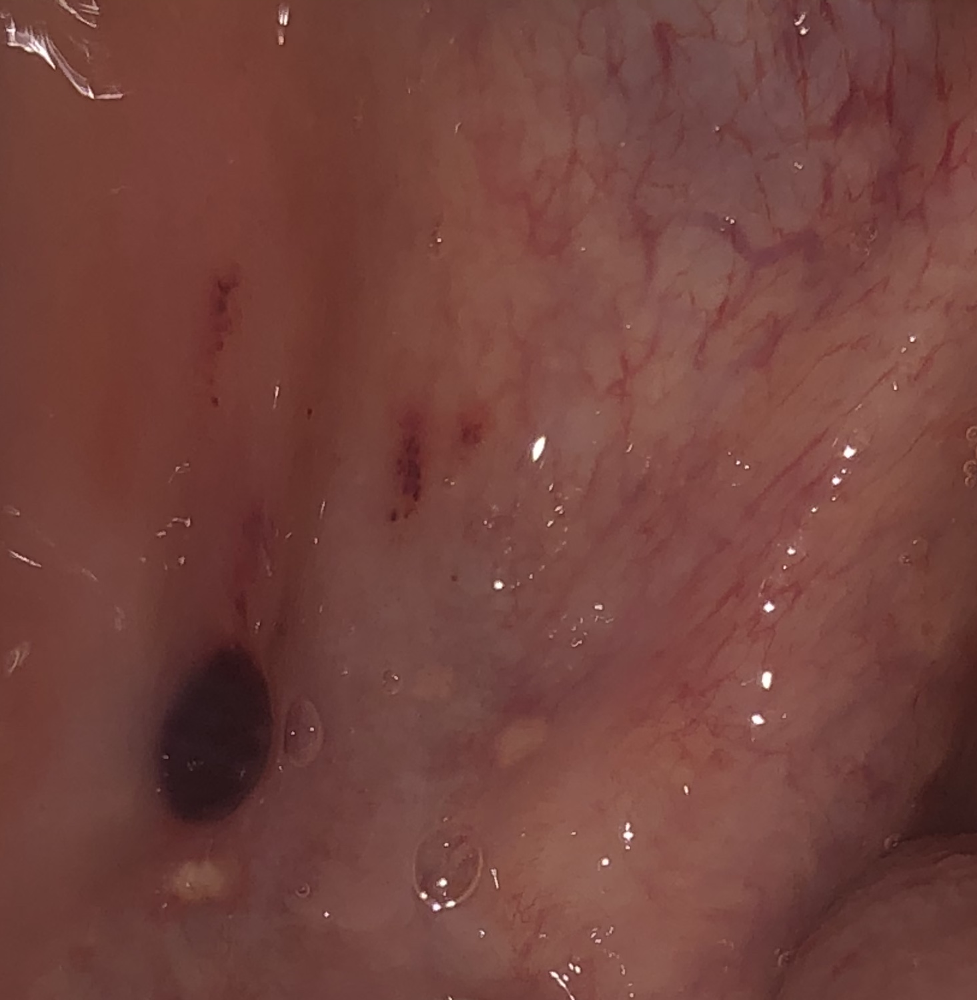

| Home | Articles | Audio | Diploma In Alchemy | About |
| Recent Articles Three Days Of Purification
The goal of purification is to communicate with your personal spirit, your personal master, or you can say your personal guardian Angel. The goal is to find answers from Allah through your master. Don’t contact your master for mundane questions. You need your master, and your master needs you. The feelings are mutual. Contact when only necessary and always be sure if you are talking to an Angel or a Djinn. Read more... |
 |
|
|
© 2020 Saint Ruhxn